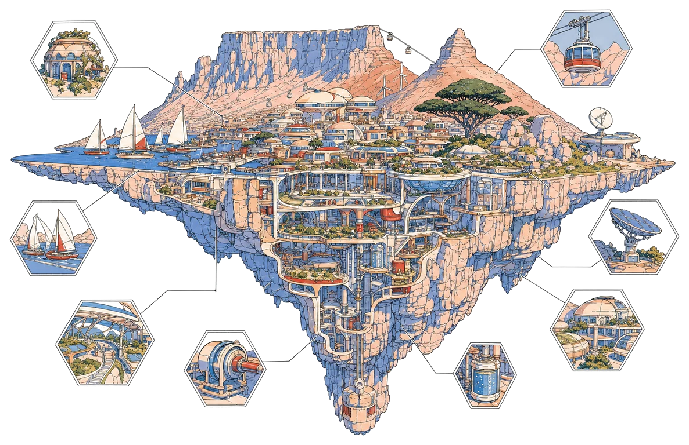

Resilience
Defense-dominant interventions that enable the function of civilization despite the cyber and epistemic risks that AI brings. Includes multi-agent security, provably secure systems, and cognitive security.
Building post-AGI institutions for robustly pluralistic futures.
A full-time, three-month research program for participants from diverse backgrounds around the world, hosted by the Cape Institute for Safe AI in Cape Town from April to July 2027.
Applications close mid-February 2027

Humanity is entering an era of unprecedented uncertainty, complexity, and volatility. The surging current of technological progress threatens to overwhelm existing institutions, exacerbating existing fragilities. To flourish in such a world, we must build systemic resilience, increase our ability to coordinate to solve collective problems, and empower humanity.
This is a mentorship-based, in-person research program around key topics relating to AGI institutions, cooperative AI, and AI resilience. The key aim of this fellowship is to provide the foundations for robust pluralism in a post-AGI world. Fellows are paired with established mentors, and develop a project alongside a cohort of peers over three months. The fellowship will run from April to July 2027, kicks off with a week-long retreat, and will be hosted at the Cape Institute for Safe AI's office space. The program acts as a hiring and pre-seed funnel, with fellows presenting to a cohort of organisations and funders at a closing showcase on 16 July. Participants will be provided with resources for building their knowledge and network, and financial support covering their living and travel expenses.
Defense-dominant interventions that enable the function of civilization despite the cyber and epistemic risks that AI brings. Includes multi-agent security, provably secure systems, and cognitive security.

Defense-flavored coordination technology that enables heterogeneous actors to coordinate, find pareto optimal agreements, and handle dissent effectively.

Extending human agency and reaping the benefits of advanced AI without unacceptable privacy trade-offs or degrading societal trust.

Sketching positive pluralistic visions for the future and suggesting pathways to reach them while acknowledging the possible risks of AI.
Existing work includes Existential Hope by the Foresight Institute, Design Sketches for a more sensible world by Forethought, and AI Resilience by Kembery and Ammann.
OpenAI Foundation
Meaning Alignment Institute
Existential Hope, Foresight Institute
Cooperative AI Foundation & University of Oxford
MIT & Google DeepMind
Google DeepMind
University of Toronto
Carnegie Mellon University and University of Oxford
National University of Singapore
University of Washington
If you have any questions, please see our FAQ section or watch the webinar recording for more details.

The future is deeply uncertain, yet centralised approaches to AI safety may inadvertently cut off the potential for humanity to explore a richer and more diverse set of values. Furthermore, approaches to AI risk that integrate a greater degree of collectivity may also prevent failure modes such as gradual disempowerment, extreme power concentration, and a permanent periphery.
That said, existing efforts at addressing AI collectively, such as through middlepower AI governance and international multinational organisations are plagued by institutional difficulties: they are slow, distrusted, poor at collective action, and fundamentally unsuited to coordinate the plethora of coordination problems that large systems of agentic AI pose. To avoid doom, stand against AI-enabled domination, we must chart a third way towards better, more hopeful futures.

This fellowship is run by the Cape Institute for Safe AI (CISAI). CISAI aims to be a world-class science and technology hub. CISAI aims to attract researchers who recognise the importance of building systemic resilience, improving coordination around collective action problems, and empowering a pluralistic humanity. CISAI's advantage in this regard is its connections to some of the top academic institutions in Africa and Cape Town's existing position as a tourist hub that internationals are glad to travel to. We believe success at this aim will have local and national implications that could scale to the rest of the continent and the world.
Furthermore, the themes of this fellowship are particularly relevant to the broader African context than many existing agendas in AI safety, which often presume access to the frontier of AI development.
African nations are among the most vulnerable in terms of cyber, bio, and epistemic risk, due to historically underdeveloped infrastructure and low rates of literacy. Preparing African nations with societal safeguards for the mass-adoption of AI will be crucial for preventing and mitigating human suffering.
South Africa is currently governed by a coalition government on the national level, and many municipalities are governed similarly. These coalitions are often weak and ineffectual, failing to steer the country into prosperity and often failing to provide basic services. Concurrently, pan-African institutions such as the African Union are often unable to effectively govern continental outcomes. We believe that technology can be used beneficially in this context to uplift human coordination and resolve resource sharing problems. This perspective aligns with the Continental Strategy on AI outlined by the African Union.
Africa is expected to have rapid AI adoption, given that it is, demographically, the youngest, most quickly growing continent. AI could easily create dynamics that create further fragmentation, oppression, and disempowerment. Creating pathways for Africans to empower themselves would have large implications for the wellbeing of humans on the continent and future generations.
Africa is highly diverse culturally, and there are often tensions between groups. Providing an inspiring and enlivening vision of the future for people to work towards together would be beautiful.
If you reach the mentor matching stage, you will be matched with mentors based on research interests and compatibility. If you receive an offer from one mentor, you will be able to work with that mentor. If you receive multiple offers from different mentors, you will have the opportunity to choose which mentor you prefer to work with. Note that each mentor-mentee pairing will still need to be approved by our team at this stage, but we expect the vast majority of pairings to be approved.
This will be a five-phase application process. The first phase will take approximately 45–75 minutes to complete. We encourage you to submit your application even if it feels unpolished; we value authenticity and substance over perfect presentation. We value inclusion and encourage applicants from diverse backgrounds. Please contact us if you require special accommodation in order to apply.
Applications are reviewed on a rolling basis with final offers made by mid-March 2027. Early submission is encouraged.
Selected candidates will be asked to complete a compensated research task.
Selected candidates will participate in a 45–60 minute interview with program staff.
Selected candidates will be interviewed by one or more mentors based on research interests and compatibility, who will make suitable candidates an offer.
Here, our team reviews the final mentor-mentee pairings to ensure their projects are within scope, and may conduct additional assessments if needed.
We welcome participants from anywhere in the world, from many levels of experience, but a basic understanding of machine learning is required (i.e. the equivalent of having completed one undergraduate course in ML). Our intention for this fellowship is to catalyse career growth in early-stage researchers who aim to contribute significantly to the fields of AI safety, cooperative AI, and AI resilience. As such, we are looking for candidates with high potential whose careers could be significantly accelerated by this program. As evidence of this, we evaluate applications based on the following criteria:
All fellows will work from the Cape Institute for Safe AI, an office space based in Kloof Street in central Cape Town.
Fellows will receive mentorship, access to a global AI Safety research community and a stipend covering housing and living expenses.
While we are strongly prioritising full-time participants for this program, you may attend part-time, though this will void your stipend.
To be eligible for this program, you must be able to attend at least 9 of the 12 weeks of the program in-person.
Yes! Please make use of our referral form here and ask the candidate to mention that you referred them when they apply. We also offer a referral award of $200 if you refer someone we end up accepting. Please read the description on the form for more details.